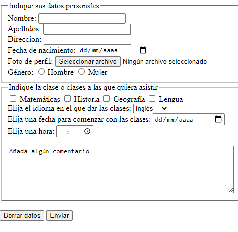

Crear el siguiente formulario
Las páginas web no solo permiten presentar documentos de forma más o menos atractiva al destinatario final, sino que también proporcionan elementos para interactuar con él. De esta manera, el usuario puede enviar respuestas a consultas, realizar compras, dar datos personales… Estos elementos se conocen como formularios.
Como actividad final le solicitamos que cree un formulario en el que solicite al usuario final (en este caso un alumno/a):
- Nombre
- Apellidos
- Dirección
- Fecha de nacimiento
- Foto de perfil
- Clases a las que quiere asistir que serán: Lengua, Matemáticas, Historia y Geografía.
- El idioma en el que quiere dar la clase: inglés, alemán o francés.
- Fecha para comenzar la clase y hora.
- Además, se añadirá un recuadro para que el usuario añada algún comentario extra.
- Por último, añadiremos los botones borrar datos y enviar.
Los datos deberán estar agrupados. Se deberán poner como campos obligatorios: nombre, apellidos, dirección.
Además, al crear el formulario:
- Identifique cuáles han sido los controles que ha creado y ha tenido que colocar en el formulario.
Los controles creados en el formulario son:
- Etiquetas de "Nombre", "Apellidos" y "Dirección" para ingresar información de texto.
- Etiqueta de "Fecha de nacimiento" para ingresar información de fecha.
- Etiqueta de "Foto de perfil" para cargar un archivo de imagen.
- Botones de radio para seleccionar el género (masculino o femenino).
- Cuadros de verificación para seleccionar las clases de "Matemáticas", "Historia", "Geografía" y "Lengua".
- Etiqueta desplegable para seleccionar el idioma de las clases.
- Etiqueta de "Fecha de inicio" para ingresar la fecha de inicio de las clases.
- Etiqueta de "Hora de inicio" para ingresar la hora de inicio de las clases.
- Área de texto para agregar comentarios.
- Botón de "Borrar datos" para restablecer todos los campos del formulario.
- Botón de "Enviar" para enviar los datos del formulario.
- Asigne las propiedades que se han especificado a los controles insertados.
- Asigne las propiedades al formulario (acción, método y tipo de codificación).
- Aplique criterios de “usabilidad” y accesibilidad.
- Pruebe la página y el formulario utilizando varios navegadores.
- Corrija los posibles errores que surjan en la elaboración de la página y el formulario.
- Documente toda la página y pasos realizados y remítalo a su tutor/a para su corrección.
El formulario debe quedar de esta manera:
Formulario
Actividad asociada al CE2.3
Realizar páginas que incorporan formularios para interactuar con el usuario, según un diseño especificado:
- Identificar los controles que hay que crear y colocarlos dentro del formulario.
- Asignar las propiedades especificadas a los controles insertados.
- Asignar las propiedades el formulario (acción, método y tipo de codificación).
- Aplicar criterios de “usabilidad” y accesibilidad.
- Probar la página y el formulario utilizando varios navegadores web.
- Corregir los posibles errores que surjan en la elaboración de la página y el formulario.
- Documentar la página web realizada.